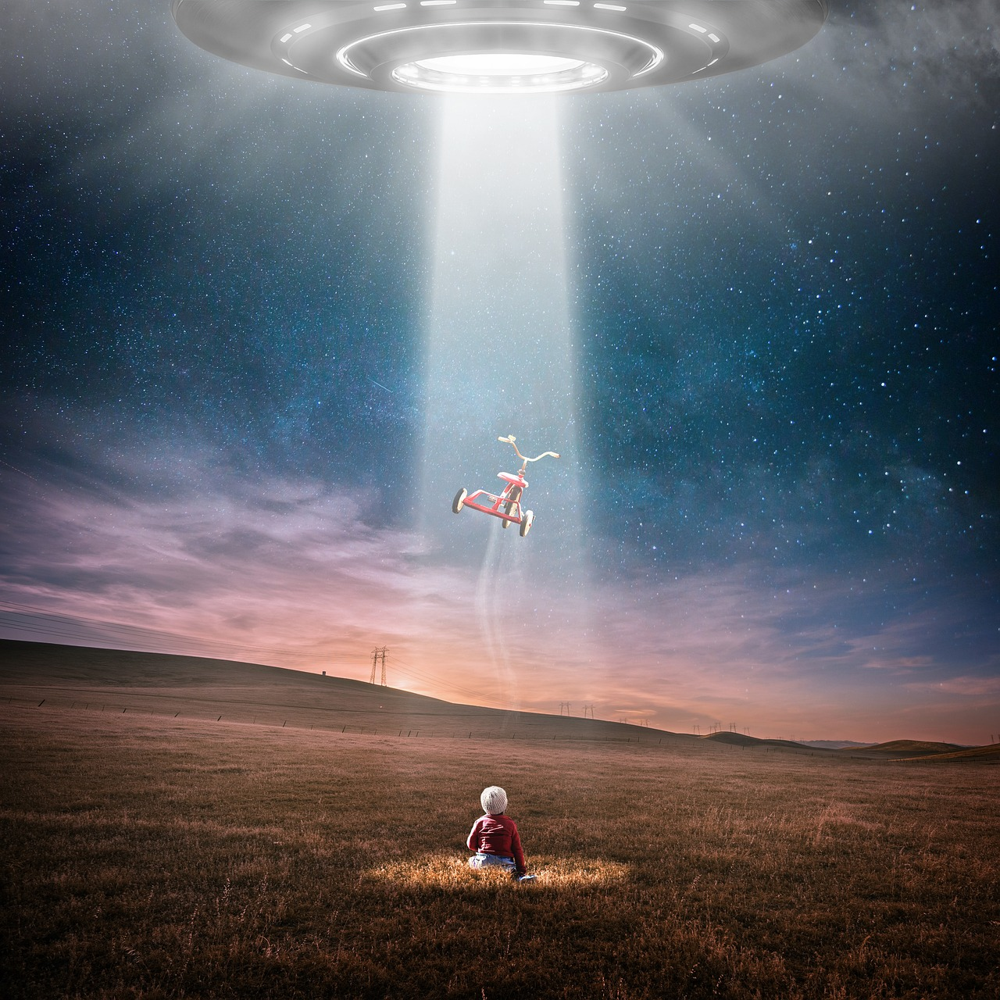
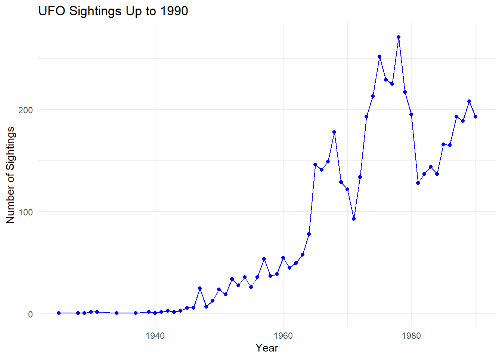
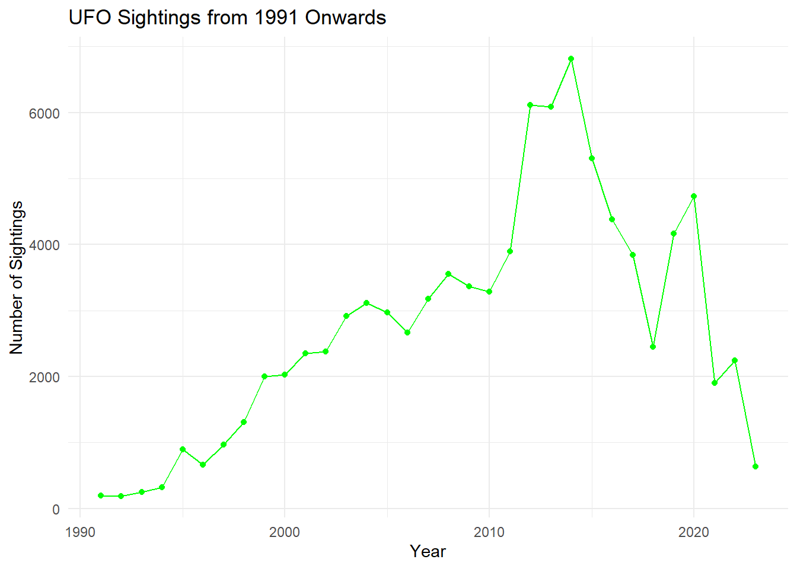

Code
# Display the structure of the data frame for debugging
str(top_five_shapes)Rowshni Farnaz Fatema
October 4, 2024
Published on October 4, 2024 By Rowshni Farnaz Fatema
Unidentified Flying Objects (UFOs) have captivated the world for decades. From the iconic “flying saucer” sightings of the 1940s to modern-day reports, the mystery of UFOs continues to fascinate. This blog explores the patterns and peaks of UFO sightings over time and highlights the cultural and historical factors that have influenced public interest in UFOs.
The goal of this analysis is to understand how UFO sightings have evolved over the past 70 years. Are these sightings linked to historical events, or is the public simply fascinated by the unknown? By examining data from various time periods, we can gain insights into the underlying trends and patterns of UFO sightings.

For this analysis, two datasets were used:
Historical UFO sighting data from the National UFO Reporting Center (NUFORC), providing details on UFO reports from the 1940s to the present. NUFORC website
TidyTuesday UFO dataset from GitHub, which includes metadata like sighting shapes and locations. TidyTuesday
Key variables included in this story are,
Data cleaning involved ensuring consistency between both datasets, such as aligning the date formats and removing incomplete records. No major transformations were applied, but some outliers in report counts were flagged for further inspection.
The Shapes of the Unknown
Unidentified Flying Objects (UFOs) have long captivated our collective imagination, weaving tales of mystery and wonder that span decades. As we sift through countless reports, intriguing patterns begin to emerge regarding the shapes that dominate these sightings. From flickering lights that dance across the night sky to the iconic forms that take on circular and triangular appearances, each shape carries its own story. The prevalence of these various formations hints at something deeper within our fascination with the unknown.
| Shape | Report Count |
|---|---|
| Light | 27910 |
| Circle | 14693 |
| Triangle | 13304 |
| Other | 10248 |
| Unknown | 10205 |
The information about the shape of UFO can be found here NUFORC website.
The data on UFO sightings reveals a captivating glimpse into the patterns of human observation and curiosity. The dominance of lights as the most frequently reported shape suggests that these ephemeral phenomena may resonate more with observers, sparking a sense of wonder and intrigue. Meanwhile, the notable presence of circular and triangular shapes underscores the variety in reported encounters, hinting at the complexity of the UFO phenomenon.
UFO Sightings Over Time
From 1947 onwards, there have been distinct peaks in UFO reports. Sightings surged after the famous 1947 sighting by Kenneth Arnold, marking the start of increased public attention. The graph below highlights the number of reported sightings from 1940 to 2020:

As seen in the figure, major spikes occurred during periods of geopolitical tension, particularly the Cold War era. This suggests that UFO reports are influenced not only by public fascination but also by external cultural and historical events. For instance, the 1970s saw a dramatic rise in sightings, potentially driven by conspiracy theories and government mistrust during this period.

The 1990s heralded a notable surge in UFO sightings, with reports skyrocketing from a mere 192 in 1991 to a staggering 2,031 by 2000. This decade was not just a statistical anomaly; it was a cultural phenomenon fueled by the rise of alien abduction narratives, particularly popularized by the iconic television series The X-Files, which first aired in 1993. The show’s gripping portrayal of government conspiracies and encounters with the extraterrestrial tapped into the collective imagination of a generation. As audiences were captivated by its mysteries and plot twists, the public’s fascination with UFOs grew, setting the stage for the new millennium. Yet, as we transitioned into the 2000s, this interest intensified further, peaking dramatically in 2014 with a staggering 6,819 reported sightings. This spike was not just a coincidence but rather reflected a cultural resurgence, marked by high-profile reports and a vibrant online discourse, even as traditional UFO organizations began to wane in membership and activity.
However, the post-2014 era brought with it a more nuanced narrative, characterized by fluctuations in sightings and a gradual decline after 2015. Several factors influenced this downturn, including a cultural shift in focus following the end of the Cold War and the emergence of terrorism fears after 9/11. With changing geopolitical landscapes, the media spotlight turned toward new threats, diverting attention from the once-popular UFO phenomena to trends such as vampires and zombies. By 2012, even the most ardent enthusiasts began to ponder whether the fervor surrounding UFOs was diminishing. Recent years have shown a more erratic pattern in sightings, with significant drops and brief resurgences—like the notable increase to 2,241 sightings in 2022—illustrating that while interest in UFOs persists, it is now interwoven with broader cultural shifts and global events. This evolving landscape of UFO sightings serves as a compelling reminder that our collective curiosity is shaped by the context of the times, reflecting how our engagement with the unknown is as much about the phenomena itself as it is about the stories we tell around it.
Belief in UFOs remains divided, often hinging on the availability of concrete evidence. The demand for tangible proof—photographs, videos, or credible witnesses—continues to shape public perception. Without verifiable documentation, skepticism abounds, challenging the narratives built around UFO sightings. Amidst the allure of these phenomena, it’s vital to remember that such fascination can also serve as a distraction from pressing real-world issues, including climate change, social justice, and public health crises. While the thrill of potential extraterrestrial encounters captivates our imagination, it is crucial to prioritize our focus on the urgent challenges humanity faces.
In conclusion, the saga of UFO sightings encapsulates not only our cultural anxieties and technological fears but also our insatiable curiosity about the unknown. As we continue to explore the skies for signs of extraterrestrial life, let us remain grounded in addressing the critical issues at hand, ensuring that our gaze remains firmly on the Earth while we ponder the mysteries above.
UFOs: From Psychology to Air Traffic, Are We Closer Now to an Answer? https://www.bbc.com/news/articles/cn09l9w08pgo. Accessed 8 Sept. 2024.
History, Greg Eghigian /. Made by. ‘The Connection Between UFO Sightings and National Security’. TIME, 27 Aug. 2024, https://time.com/6996951/ufo-sighting-history-national-security/.
Wang, Y. (2021, August 11). Stop the UFO mania: No evidence of aliens. The Washington Post. https://www.washingtonpost.com/magazine/2021/08/11/stop-ufo-mania-no-evidence-of-aliens/
NUFORC Reports by Shape. 20 Aug. 2023, https://nuforc.org/ndx/?id=shape.
Wickham H, Averick M, Bryan J, Chang W, McGowan LD, Françoi R, Grolemun G, Haye A, Henr L, Heste J, Kuh M, Pederse TL, Mille E, Bach SM, Müll K, Oo ,J, Robins ,D, Seid ,DP, Spi ,V, Takahas ,K, Vaugh ,D, Wil ,C, W ,K, Yutani ,H (2019). “Welcome to the tidyverse.” Journal of Open Source Software, 4(43), 1686. doi:10.21105/joss.01686 https://doi.org/10.21105/joss.01686.
H. Wickham. ggplot2: Elegant Graphics for Data Analysis. Springer-Verlag New York, 2016.
Müller K (2020). here: A Simpler Way to Find Your Files. R package version 1.0.1, https://CRAN.R-project.org/package=here.
Hester J, Henry L, Muller K, Ushey K, Wickham H, Chang W (2024). withr: Run Code ‘With’ Temporarily Modified Global State. R package version 3.0.1, https://CRAN.R-project.org/package=withr.
Wickham H, Francois R, Henry L, Muller K, Vaughan D (2023). dplyr: A Grammar of Data Manipulation. R package version 1.1.4, https://CRAN.R-project.org/package=dplyr.
Pedersen T (2024). patchwork: The Composer of Plots. R package version 1.2.0, https://CRAN.R-project.org/package=patchwork.
Xie Y (2024). knitr: A General-Purpose Package for Dynamic Report Generation in R. R package version 1.48, https://yihui.org/knitr/.
Yihui Xie (2015) Dynamic Documents with R and knitr. 2nd edition. Chapman and Hall/CRC. ISBN 978-1498716963
Yihui Xie (2014) knitr: A Comprehensive Tool for Reproducible Research in R. In Victoria Stodden, Friedrich Leisch and Roger D. Peng, editors, Implementing Reproducible Computational Research. Chapman and Hall/CRC. ISBN 978-1466561595
Wickham H (2024). rvest: Easily Harvest (Scrape) Web Pages. R package version 1.0.4, https://CRAN.R-project.org/package=rvest.
Zhu H (2024). kableExtra: Construct Complex Table with ‘kable’ and Pipe Syntax. R package version 1.4.0, https://CRAN.R-project.org/package=kableExtra.